엔트리 코딩 교실 2차시
내 습관을
배우는 컴퓨터
예측 가위바위보 만들기
오늘 배울 것
컴퓨터를 더 똑똑하게 바꿔요

지난 시간 컴퓨터
아무거나 내요
3판 중 1판쯤 이겨요
오늘 컴퓨터
내 습관을 기억해요
다음 손을 맞혀서 이겨요
1단계 기록하기
내가 낸 손을 적어요
2단계 예측하기
내 다음 손을 짐작해요
3단계 이기기
짐작한 손을 이기는 손을 내요
수업 시작 전 점검
지난 시간 작품을 열어 봐요
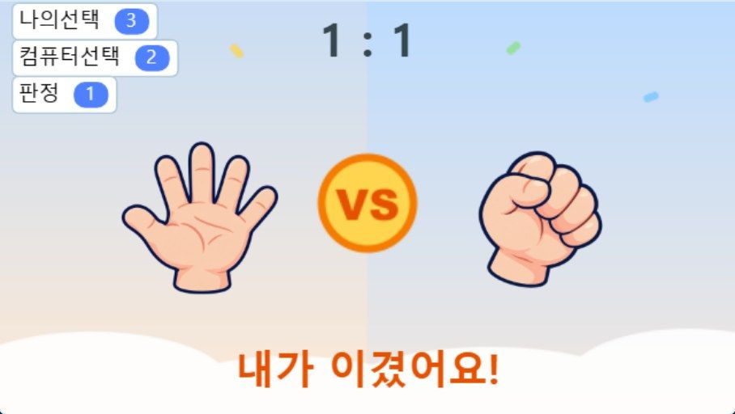
지난 시간에 완성한 게임 화면이에요
이렇게 되면 준비 끝!
① 시작하면 규칙을 말해요
② 1·2·3 키를 누르면 내 손이 바뀌어요
③ 컴퓨터도 손을 내요
④ 누가 이겼는지 글자가 나와요
⑤ 점수가 올라가요
작품이 없나요? 다음 장을 봐요!
작품을 잃어버린 친구
완성본 파일을 받아서 시작해요
지난 시간 완성본 파일
1 파일 받기
위 주소를 열면
start.ent 파일이
컴퓨터에 저장돼요
2 엔트리 열기
playentry.org에서
[만들기] →
[작품 만들기]
3 불러오기
위쪽 [새로 만들기] 메뉴 →
[오프라인 작품 불러오기]
→ start.ent 고르기
지난 시간 완성 코드 ①
나 · 컴퓨터 오브젝트
나
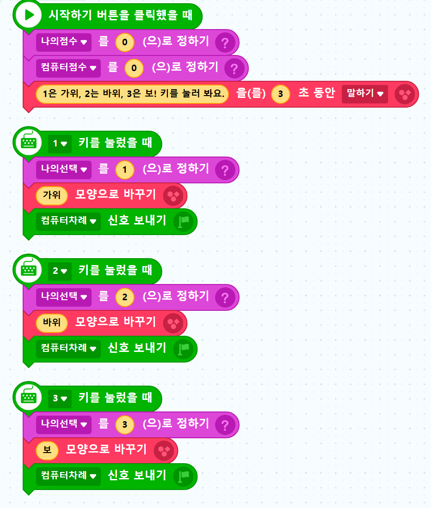
컴퓨터
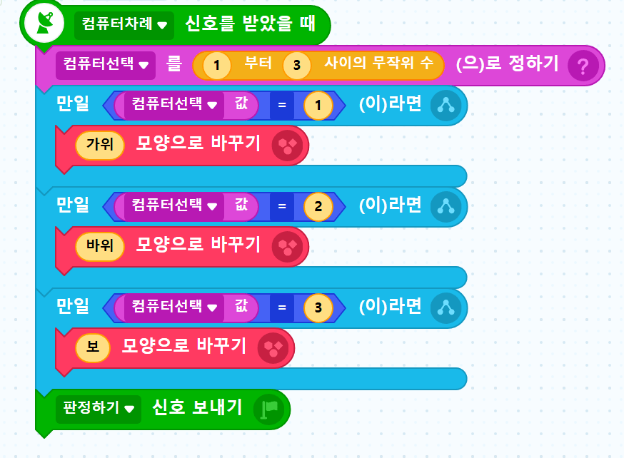
지난 시간 완성 코드 ②
결과 · 점수판 글상자
결과
글상자
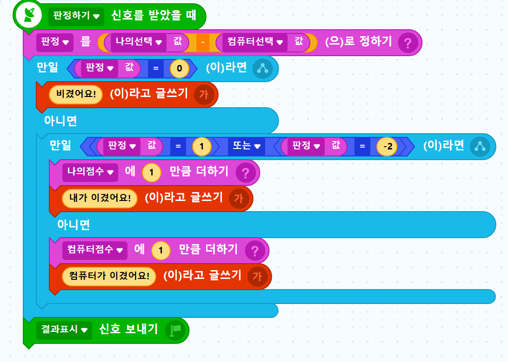
변수 5개
나의선택 · 컴퓨터선택 · 판정
나의점수 · 컴퓨터점수
신호 3개
컴퓨터차례 · 판정하기 · 결과표시
이름이 똑같아야 오늘 코드와 맞아요!
점수판 글상자
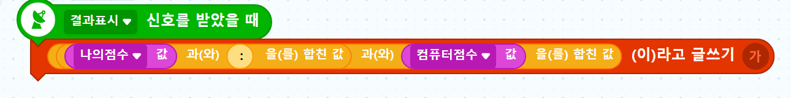
생각해 보기
왜 3판 중 1판만 이길까요?
내가 바위를 냈을 때, 컴퓨터가 낼 수 있는 손은 3가지예요
컴퓨터가 져요
비겨요
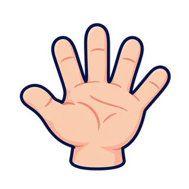
컴퓨터가 이겨요
컴퓨터는 나를 보지 않고 아무거나 내요. 그래서 이길 확률은 3가지 중 1가지예요.
짝 활동 · 컴퓨터 없이
내 손에도 습관이 있을까요?
1 내고 적기
짝과 가위바위보를
20번 해요. 짝은 내가
낸 손을 순서대로 적어요
2 습관 찾기
적은 것을 보면서
“가위 다음에는 무엇을
자주 냈지?” 찾아봐요
3 맞혀 보기
10번 더 하면서
짝이 낼 손을 먼저
종이에 써 봐요
아무렇게나 냈는데도, 자주 나오는 순서가 있었나요?
오늘의 아이디어
우리가 한 방법을 컴퓨터에게 가르쳐요
① 기록
내가 낸 손을
표에 적어요
② 예측
표를 보고 다음 손을
짐작해요
③ 이기기
짐작한 손을 이기는
손을 내요
예측은 지난 기록을 보고 앞으로 일어날 일을 짐작하는 거예요.
습관표 ①
습관표는 이렇게 생겼어요
이전 손 ↓
다음 손 →
가위
바위
보
가위
0
0
0
바위
0
0
0
보
0
0
0
가로줄은 방금 낸 손
(이전 손)이에요
세로칸은 그다음에 낸 손
(다음 손)이에요
테두리 칸의 숫자는 “가위 다음에
바위를 낸 횟수”예요
습관표 ②
손을 내면서 표를 채워 봐요
가위
바위
보
가위
바위
① 가위 다음 바위 → 가위 줄 · 바위 칸 +1
② 바위 다음 보 → 바위 줄 · 보 칸 +1
③ 보 다음 가위 → 보 줄 · 가위 칸 +1
④ 가위 다음 바위 → 가위 줄 · 바위 칸 또 +1
손은 5번 냈는데 짝은 4개예요.
첫 손은 이전 손이 없으니까요!
| 이전 ↓ 다음 → | 가위 | 바위 | 보 |
|---|---|---|---|
| 가위 | 0 | 2 | 0 |
| 바위 | 0 | 0 | 1 |
| 보 | 1 | 0 | 0 |
습관표 ③
표를 읽으면 다음 손이 보여요
| 이전 ↓ 다음 → | 가위 | 바위 | 보 |
|---|---|---|---|
| 가위 | 1 | 5 | 2 |
| 바위 | 3 | 0 | 1 |
| 보 | 0 | 1 | 4 |
1 방금 가위를 냈어요
→ 가위 줄을 봐요
2 가장 큰 수는 5, 바위 칸이에요
→ 다음은 바위를 낼 것 같아요
3 바위를 이기려면?
→ 컴퓨터는 보를 내요!
퀴즈
내가 컴퓨터라면 무엇을 낼까요?
| 이전 ↓ 다음 → | 가위 | 바위 | 보 |
|---|---|---|---|
| 가위 | 1 | 5 | 2 |
| 바위 | 3 | 0 | 1 |
| 보 | 0 | 1 | 4 |
문제 1
방금 보를 냈어요.
다음 손은? 컴퓨터는 무엇을 낼까요?
문제 2
방금 바위를 냈어요.
다음 손은? 컴퓨터는 무엇을 낼까요?
표를 리스트로 ①
엔트리에서는 표를 한 줄로 펴요
엔트리에는 표 대신 리스트가 있어요.
리스트는 번호가 붙은 사물함이에요.
가위 줄
1
2
3
바위 줄
4
5
6
보 줄
7
8
9
표의 칸에 왼쪽 위부터 차례로
1번부터 9번까지 번호를 붙였어요.
습관표 리스트
1 가위 다음 가위
2 가위 다음 바위
3 가위 다음 보
4 바위 다음 가위
5 바위 다음 바위
6 바위 다음 보
7 보 다음 가위
8 보 다음 바위
9 보 다음 보
표를 리스트로 ②
“바위 다음 보”는 몇 번 칸일까요?
가위 줄 (앞에 있는 3칸)
1
2
3
바위 줄
4
5
6
보 줄
7
8
9
1 줄 찾기
이전 손은 바위.
바위 줄 앞에는 3칸이 있어요
2 칸 찾기
다음 손은 보.
보는 숫자로 3, 줄의 3번째 칸이에요
3 더하기
앞에 있는 3칸 + 3번째
= 6번 칸이에요!
표를 리스트로 ③
앞에 있는 칸 수에도 규칙이 있어요
| 이전 손 | 앞에 있는 줄 | 앞에 있는 칸 | 식으로 쓰면 |
|---|---|---|---|
| 가위 1 | 0줄 | 0칸 | (1 − 1) × 3 |
| 바위 2 | 1줄 | 3칸 | (2 − 1) × 3 |
| 보 3 | 2줄 | 6칸 | (3 − 1) × 3 |
칸번호 = (이전 손 − 1) × 3 + 다음 손
연습 문제 · 가위 1, 바위 2, 보 3
몇 번 칸일까요?
가위 다음 보
( ___ − 1) × 3 + ___
= ___ 번 칸
보 다음 바위
( ___ − 1) × 3 + ___
= ___ 번 칸
바위 다음 바위
( ___ − 1) × 3 + ___
= ___ 번 칸
다 풀었으면 앞의 사물함 목록에서 정답인지 확인해 봐요!
1단계 · 기록하기
리스트와 변수를 만들어요
① 리스트 만들기
[속성] 탭 → [리스트] →
[리스트 추가하기]
이름은 습관표
② 칸 9개 준비하기
▼를 눌러 [리스트 항목 수]를
9로 만들어요.
9칸 모두 0인지 확인해요
③ 변수 2개 만들기
이전선택
방금 전 판에 낸 손
칸번호
리스트에서 찾아갈 번호
④ 신호 1개 만들기
[신호] → 기록하기
이름은 슬라이드와 똑같이,
띄어쓰기 없이 써요
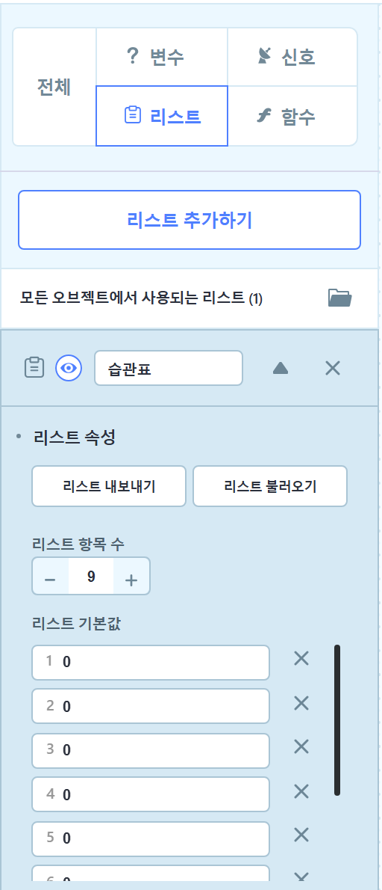
1단계 · 기록하기
자리를 만들고, 바통 길을 바꿔요
무대 자리 만들기
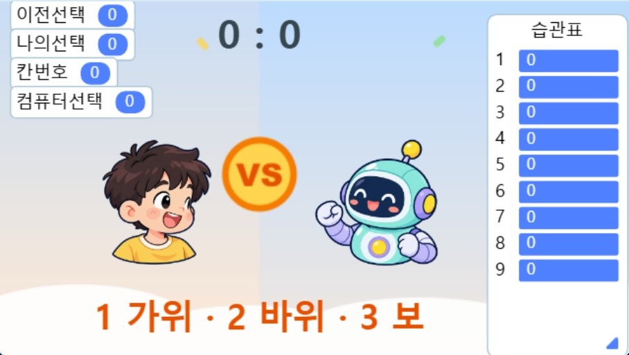
습관표 창을 오른쪽 끝으로 끌어요.
나와 컴퓨터는 왼쪽으로 옮겨요.
(x 값 예시: 나 −122, 컴퓨터 50)
바통 길 바꾸기
컴퓨터 코드의 맨 아래 블록을 바꿔요.
전: 판정하기 신호 보내기
후: 기록하기 신호 보내기
손을 낸 다음 곧바로 판정하지 않고,
먼저 기록을 해요.
판정하기 신호는 기록 코드가
끝날 때 보낼 거예요.
1단계 · 기록하기 · 컴퓨터 오브젝트
기록 코드를 새로 넣어요
1
2
3
4
5
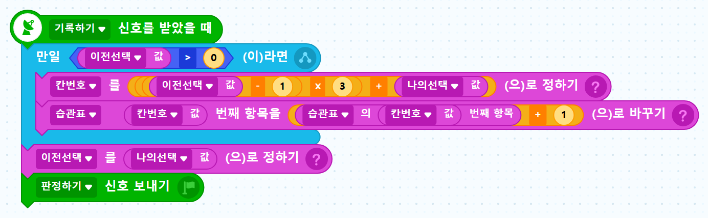
1 이전 손이 있을 때만 기록해요
2 공식으로 칸번호를 계산해요
3 그 칸의 숫자에 1을 더해요
4 이번 손을 이전 손으로 기억해요
5 판정하기 바통을 넘겨요
1단계 · 코드 읽기 · 지난 판 바위(2), 이번 판 보(3)
숫자를 넣어 따라가 봐요
| 차례 | 블록이 하는 일 | 숫자로 보면 |
|---|---|---|
| 1 | 이전선택이 0보다 큰가요? | 2 > 0 → 네, 기록해요 |
| 2 | 칸번호 계산하기 | (2 − 1) × 3 + 3 = 6 |
| 3 | 습관표 6번 칸에 1 더하기 | 0 + 1 = 1 |
| 4 | 이전선택을 나의선택으로 정하기 | 이전선택이 2에서 3으로 |
| 5 | 판정하기 신호 보내기 | 결과 글상자가 승패를 정해요 |
생각 퀴즈
“만일 이전선택 > 0”은 왜 있을까요?
첫 판을 생각해 봐요
아직 낸 손이 없어요.
그래서 이전선택은 0이에요.
내가 바위(2)를 내면
(0 − 1) × 3 + 2 = −1
−1번 칸이 있나요?
사물함은 1번부터 9번까지뿐이에요.
없는 칸에는 기록할 수 없어요.
그래서 첫 판은 기록을 건너뛰어요!
1단계 · 실행해서 확인
2번 키, 3번 키를 눌러 봐요
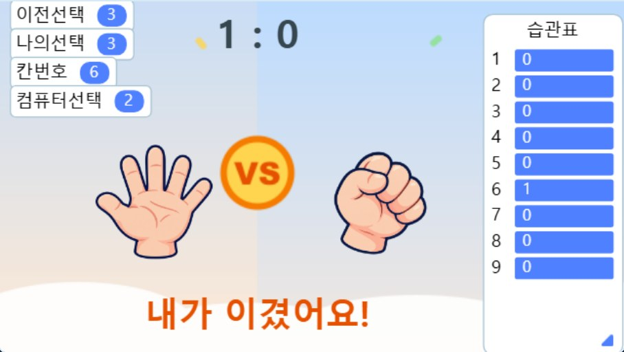
이렇게 나오면 성공!
칸번호는 6
습관표 6번 칸은 1
이전선택은 3
승패는 달라도 괜찮아요.
컴퓨터는 아직 아무거나 내요.
2단계 · 예측하기
세 칸에서 1등을 찾아요
컴퓨터는 세 숫자를 한눈에 못 봐요. 하나씩 보면서 지금까지의 1등과 비교해요.
가위 칸
2
0보다 커요
→ 새로운 1등!
바위 칸
5
2보다 커요
→ 새로운 1등!
보 칸
1
5보다 작아요
→ 1등은 그대로
1등은 바위 칸! 그래서 다음 손은 바위라고 예측해요.
2단계 · 예측하기
변수 이름을 붙여서 따라가요
후보
지금 보고 있는 손
최대횟수
지금까지 1등의 숫자
예측
지금까지 1등인 손
| 후보 | 칸의 값 | 최대횟수보다 커요? | 최대횟수 | 예측 |
|---|---|---|---|---|
| 시작 | - | - | 0 | 0 (모름) |
| 1 가위 | 2 | 2 > 0 네 | 2 | 1 |
| 2 바위 | 5 | 5 > 2 네 | 5 | 2 |
| 3 보 | 1 | 1 > 5 아니요 | 5 | 2 |
2단계 · 예측하기
변수와 바통을 더 만들어요
① 변수 3개
후보 · 최대횟수 · 예측
예측은 무대에 보이게 해요
② 신호 1개
손내기
③ 맨 위 블록 바꾸기
손 내는 코드의 맨 위를
“손내기 신호를 받았을 때”로
이제 바통은 이렇게 넘어가요
나
컴퓨터차례
→
예측 찾기
손내기
→
손 내기
기록하기
→
기록
판정하기
→
결과
결과표시
→
점수판
2단계 · 예측하기 · 컴퓨터 오브젝트
예측 찾기 코드를 넣어요
1
2
3
4
5
6
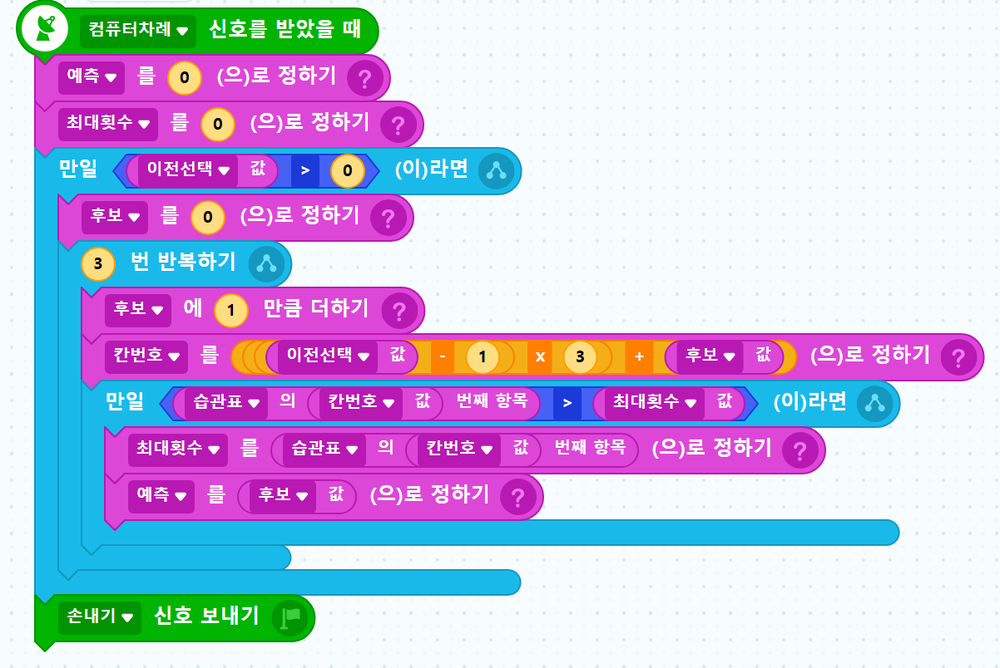
1 아직 모르니까 둘 다 0
2 이전 손이 있을 때만 찾아요
(첫 판은 예측 0)
3 세 칸이니까 3번 반복해요.
후보가 1, 2, 3으로 커져요
4 줄은 이전 손, 칸은 후보로
칸번호를 계산해요
5 지금 1등보다 크면
1등을 바꿔요
6 손내기 바통을 넘겨요
내 이번 손은 쓰지 않아요!
2단계 · 실행해서 확인
예측이 맞는지 눈으로 봐요
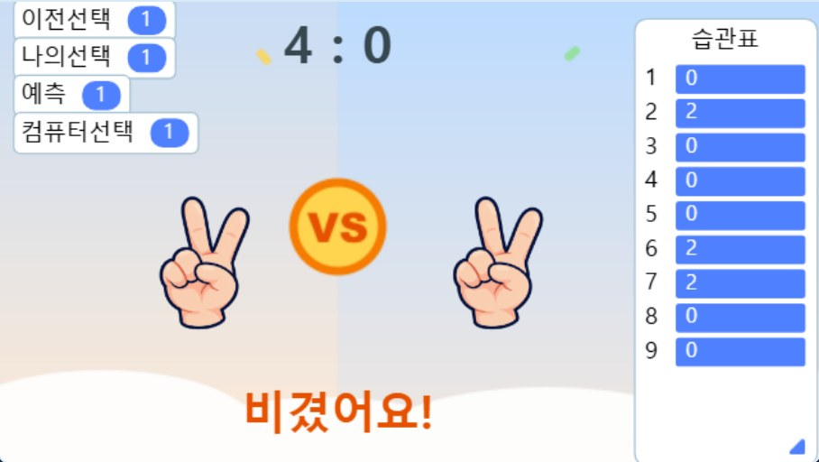
이 순서로 눌러요
1 2 3 1 2 3 1
예측과 나의선택이 같으면
컴퓨터가 맞힌 거예요!
예측 0은 “아직 몰라요”예요.
컴퓨터 손은 아직 아무거나 내요.
3단계 · 이기기
예측한 손을 이기는 손은?
가위 1
바위 2
바위 2
보 3
보 3
가위 1
1 → 2, 2 → 3 이니까 숫자에 1을 더하면 이기는 손이 돼요!
그런데 3 + 1 = 4?
4번 손은 없어요!
3단계 · 이기기
나머지를 쓰면 빙글 돌아와요
| 예측 | 3으로 나눈 나머지 | 나머지 + 1 | 컴퓨터가 낼 손 |
|---|---|---|---|
| 1 가위 | 1 | 2 | 2 바위 |
| 2 바위 | 2 | 3 | 3 보 |
| 3 보 | 0 | 1 | 1 가위 |
사탕 2개를 3명에게 똑같이 나누면?
못 나누니까 2개가 남아요. 3개면 0개 남아요.
이기는 손 = (예측 ÷ 3의 나머지) + 1
3단계 · 이기기 · 컴퓨터 오브젝트
무작위 한 줄을 바꿔요
1
2
3
4
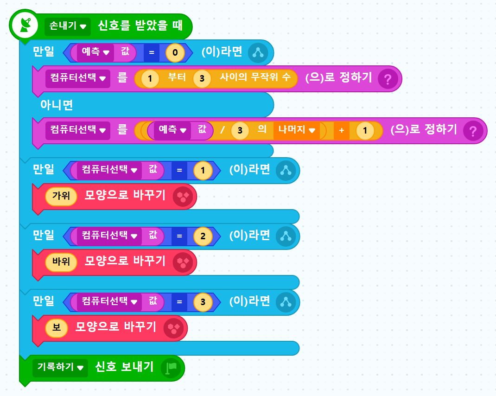
전: 컴퓨터선택 = 1부터 3 사이 무작위 수
1 예측이 0이면 아직 모르는 거예요.
이때는 무작위로 찍어요
2 아니면 예측을 이기는 손을 내요
예측 2 → 나머지 2 → 2 + 1 = 3 (보)
3 모양 바꾸기는 그대로 둬요
4 기록하기 바통도 그대로예요
생각 퀴즈
왜 손을 낸 뒤에 기록할까요?
기록을 먼저 하면?
내 이번 손이 표에 먼저 들어가요.
컴퓨터가 그 표를 보고 손을 내면
내 손을 몰래 보는 셈이에요.
→ 반칙이에요!
손을 먼저 내면?
지난 기록만 보고 짐작해서 내요.
내 이번 손은 손을 낸 다음에
표에 적어요.
→ 공정한 대결이에요!
3단계 · 실행해서 확인
1 2 3을 반복해서 내 봐요
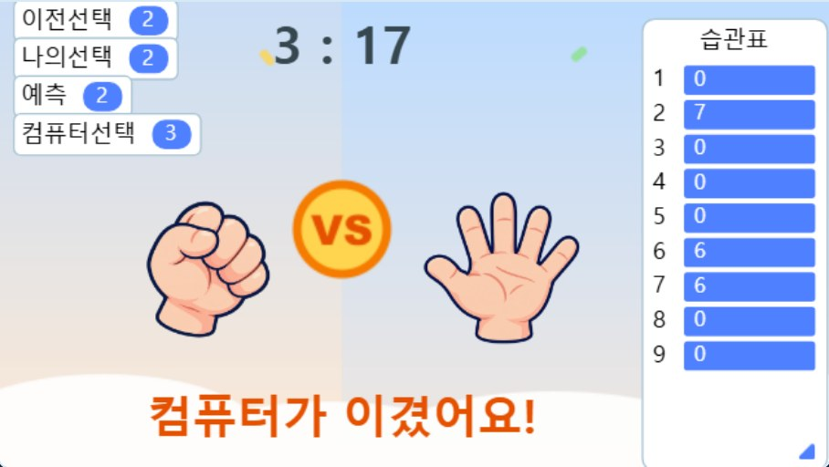
20판 해 보았더니 (나 : 컴퓨터)
3 : 17
처음 4판은 아직 몰라서 아무거나 내요.
5판째부터는 컴퓨터가 계속 이겼어요!
실험 · 각각 20판씩, 실험마다 다시 시작
우리 컴퓨터를 시험해 봐요
| 이렇게 내요 | 누가 이길까? (예상) | 나 : 컴퓨터 (결과) |
|---|---|---|
| ① 같은 손만 계속 내기 | : | |
| ② 내 마음대로 내기 | : | |
| ③ 주사위로 정해서 내기 | : | |
| ④ 습관표를 보고 컴퓨터를 이기기 | : |
컴퓨터를 이기려면 어떻게 내야 할까요? 까닭도 말해 봐요!
더 생각해 봐요
컴퓨터를 더 똑똑하게 만들 수 있을까요?
★★
적중률 보기
예측이 맞은 횟수를 세어 몇 %인지 보여 줘요.
누구의 손이 가장 잘 맞혀질까요?
★★
동점이면?
가위 칸 3, 바위 칸 3이면 지금 코드는 어느 손을 고를까요?
더 좋은 방법이 있을까요?
★★★
손 2개 기억하기
이전 손 2개를 함께 보면 더 잘 맞힐까요?
습관표는 몇 칸이 필요할까요?
오늘의 비밀
주변에도 예측이 숨어 있어요
글자 자동 완성
많은 글을 보고
다음 낱말을 짐작해요
동영상 추천
내가 본 영상을 보고
좋아할 영상을 짐작해요
날씨 예보
지금까지의 날씨 기록으로
내일 날씨를 짐작해요
기록을 모으고, 규칙을 찾아, 앞일을 짐작해요. 우리 습관표와 같은 생각이에요!
오늘 배운 것
컴퓨터가 읽은 것은
마음이 아니라
내 기록이에요
① 기록
② 예측
③ 이기기